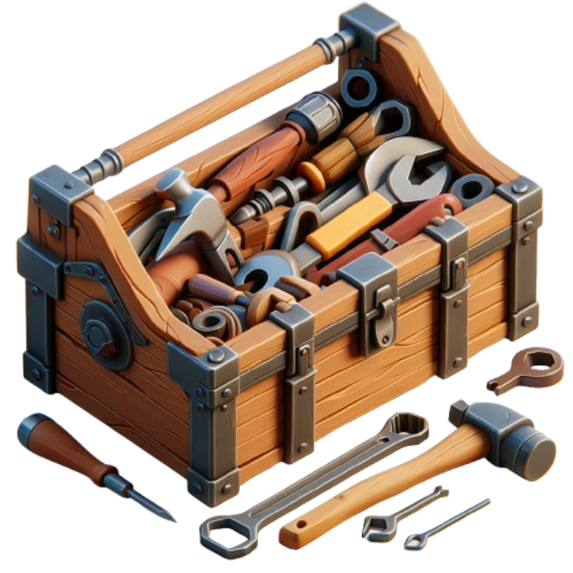
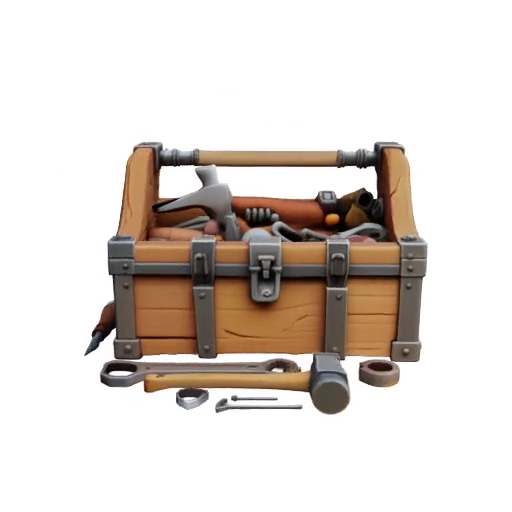
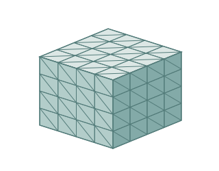
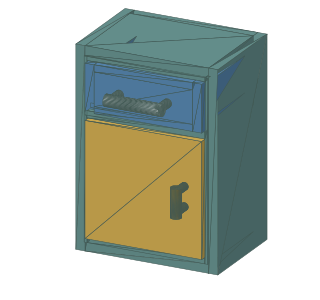
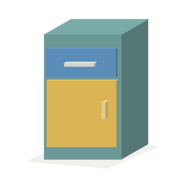
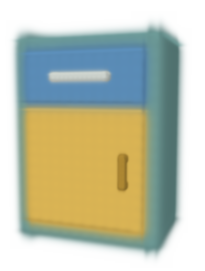

2. 3D generation
A robot sees a cabinet in an image. How do we turn that image into something it can open in simulation? We need to recover a shape, decide how to represent it, and give its parts rules for movement.
2.1 From an image to a usable 3D object
A photograph tells us which colors appeared from one camera position. It does not directly give the cabinet’s depth, the shape of its back, or the space inside its drawer. Many different 3D objects could produce a similar front view.
Reconstruction tries to recover the particular object or scene in the observations. Photos from several viewpoints help reveal depth and hidden surfaces. Generation uses patterns learned from other objects to create a plausible asset from a prompt or image. With one image, those learned patterns can help fill in unseen regions, but a plausible interior is not necessarily the real interior.
These are different levels of information. A beautiful cabinet may still be one fused shape. Separate drawer and body shapes may still have no rule saying that the drawer slides. Even a sliding drawer needs physical properties before we can calculate what a pull will do.
This progression—from whole shapes, to parts, to parts with motion—is also the organizing idea in SPARK’s related work. We will first understand the shape and appearance, then connect them to simulation.
The full path: a picture, a 3D model, and a new picture
Suppose we start with a picture of a cabinet and want to see its other side. We first need a 3D version of the cabinet. We can then put a virtual camera beside it and make a new picture.
- Input images
What the original camera saw.
- Reconstruct or generate
A method estimates a 3D object or scene.
- Store the 3D result
For example, a mesh, 3D Gaussians, or a learned field.
- Render from a camera
Calculate what is visible from a chosen viewpoint.
- A new 2D image
The same 3D result, seen from that viewpoint.
Three examples of this path
TRELLIS
Input: one image.
Create: a pretrained generator proposes the object’s 3D form.
Save the 3D scene: a mesh or 3D Gaussians, among its supported outputs.
Render a 2D image: draw the mesh surfaces, or project and blend the Gaussians.
Original 3DGS
Input: photographs of a scene from several views, with estimated cameras.
Create: adjust Gaussians until their images match those photos.
Save the 3D scene: positions, shapes, opacity, and appearance of the Gaussians.
Render a 2D image: project and blend them into an image.
Original NeRF
Input: photographs of a scene from several views, with known camera poses.
Create: train a network until its images match those photos.
Save the 3D scene: the trained network’s weights.
Render a 2D image: query the network along lines of sight and combine its answers.
These are alternative routes. TRELLIS can infer unseen sides from its prior training; the original NeRF and 3DGS methods fit one observed scene. A convincing new view does not by itself prove that the hidden geometry is correct. Sources: TRELLIS, 3DGS, and NeRF.
How rendering helps us build the 3D model
Building a 3D model and rendering an image are opposite directions, but they work together. If we have a candidate 3D cabinet, we can draw it from the same viewpoint as an input photo. Comparing the two images tells us how well the candidate explains what the camera saw.
Use photographs to construct or adjust a 3D representation.
Make a picture from a known camera view. During fitting, compare it with the photograph to check the current estimate.
For example, if the rendered handle appears too far left, its 3D position may need to change. Other camera views help distinguish a sideways error from a depth error. Repeating this process is one way to learn a scene from images.
The original NeRF and 3DGS methods take photographs of one particular cabinet. They repeatedly adjust their 3D version of that cabinet until its rendered views resemble those photographs.
An image-to-3D system such as TRELLIS has already been trained using many different objects. When we give it a new cabinet photo, it uses what it learned to propose a 3D cabinet, including surfaces hidden in that photo. This prior training is what “pretrained” means.
For example, TRELLIS can produce a mesh of the cabinet: its shape stored as connected surface patches. It can also produce 3D Gaussians: soft blobs positioned in 3D, which a renderer blends into images. TRELLIS names the system that creates the model; “mesh” or “3D Gaussians” describes the kind of data it produces. We will look at how each works below.
One image, two kinds of 3D output
Here is a toolbox example published by the TRELLIS authors. The input is one image; the other two pictures show views of the generated 3D outputs.
The output pictures use different display modes. The mesh picture shows the surface shape without the wood and metal textures. The Gaussian picture includes the generated appearance. This difference in presentation can make the Gaussian result look more finished.

Input image
A single 2D picture.

Mesh · shape view
The surfaces, with the wood and metal appearance omitted.

Gaussians · appearance view
The generated colors, blended into an image.
A mesh can also show wood grain and shiny metal. Its surfaces can carry textures and materials. In fact, the TRELLIS authors also export meshes with appearance transferred from the Gaussians. These pictures therefore do not establish that one representation produces better-looking images. TRELLIS explains its display modes and textured mesh exports.
Images: TRELLIS authors’ image-to-3D gallery. Their input image was generated with DALL·E 3. The two output views are frames from the same published example.
Why would we choose a mesh?
Suppose we want a robot to grasp the toolbox handle. We need to locate the handle’s surface and the gap behind it, edit the shape if necessary, and prepare shapes for contact. A mesh gives us explicit surface patches to work with. We can also organize its geometry into parts before adding joints and physical properties.
If our immediate goal is to reproduce the look of a photographed scene from new viewpoints, 3DGS is designed for that rendering task. Its colored blobs can capture appearance without first building a connected surface. The choice depends on what we want to do with the result; surface geometry and Gaussian appearance can also be used together. Original 3DGS project.
2.2 Meshes: surfaces and useful detail
A mesh describes surface shape using connected patches. For a drawer, these can describe the outside, the inner walls, and the bottom. The empty space inside the drawer stays empty: a surface mesh does not mean the whole object is filled with material.
A point cloud records sampled positions in 3D. A mesh also records how positions connect to form surfaces. The positions are called vertices, their connections are edges, and the surface patches are faces. Moving the positions changes the shape; changing their connections changes how the surface is assembled.

Point cloud
Useful for recording measurements. Gaps may mean an area was never observed, rather than a real hole.

Triangle mesh
Explicit surface patches. Triangles are always planar, which makes them convenient for rendering and geometric calculations.

Quad mesh
Four-sided patches can form regular rows useful for editing and subdivision. They can be triangulated for rendering.
Building a mesh from measured points is called surface reconstruction. It must infer which samples belong together; blindly filling every gap could seal the opening around a drawer. Open3D’s examples show several ways to estimate these surfaces.
What is Blender used for?
Blender is free software for making and editing 3D content. We could open a generated cabinet in Blender, rotate it to inspect the back, build a missing handle, add a wood texture, position lights and a camera, and render an image. It is a working environment for these tasks; a mesh is one kind of data we can edit inside it.
The material guide explains how to control the appearance of those surfaces.
2.3 How a 3D model produces a 2D image
A mesh supplies the surfaces of objects in a scene. A scene also specifies where those objects are placed, where the camera looks, and how surfaces are colored and lit. The renderer uses that information to calculate an image.
A texture is often an image placed on a surface, like a printed pattern. A material controls how the surface responds to light—for example, whether a handle looks like dull plastic or shiny metal.
Which tool makes these pictures?
A renderer is the software that calculates the picture. We give it a 3D scene and a virtual camera: where the camera is, which way it looks, and how wide its view is. The software calculates the pixels and saves the result as an image.
Think of photographing a cabinet from the left, front, and right. In rendering, we place a virtual camera at those three positions. We keep the same 3D cabinet and calculate a new picture from each position.
| What we have | Example tool | What we do |
|---|---|---|
| A mesh | Blender, using a renderer such as Eevee or Cycles. | Load the model, set its appearance, place lights and a camera, then render and save an image. |
| 3D Gaussians | A Gaussian renderer, such as gsplat. | Load the blobs and choose a camera. The renderer projects the blobs and blends their colors into the image. |
For this book’s Gaussian cabinet videos, we wrote a small renderer in Python. It calculates the projected marks and their color mixtures. The left, front, and right pictures all come from the same cabinet data. Rendering many frames while moving the camera, then joining those frames into a video, gives the moving-camera example below.
A screenshot can record a picture already displayed by a viewer. Here, the renderer saves its calculated images directly.

Stored surfaces
The mesh gives the cabinet its shape and depth.

One camera view
The surfaces become colored areas in an image. The construction edges need not be visible.
One common mesh-rendering process is rasterization:
- Project the triangles. Use the camera’s position, viewing direction, and lens to map their 3D corners to 2D image positions. With a perspective camera, a farther object generally appears smaller.
- Find what each pixel sees. Work out which projected triangles cover it. For opaque surfaces, keep the nearest visible surface; a closed door hides what is behind it.
- Calculate the color. Use the visible surface’s material, texture, direction, and lighting. Repeat across the image.
Imagine walking around a real cabinet: the cabinet stays still, but you see a different side. A virtual camera works similarly. Keep the 3D cabinet in place, move the camera from the front to the side, and render again. The new image shows the surfaces visible from the side. We do not need to rebuild the mesh for that camera movement.
This is what the mesh contributes: the cabinet’s surfaces in 3D. The camera chooses the view, and the renderer calculates the picture. More on rendering.
We can also make new views using other kinds of stored 3D information. A mesh stores connected surface patches. 3DGS stores many colored, soft 3D blobs; its renderer blends their projected colors. NeRF stores a trained network; its renderer asks the network about locations along each line of sight. All three can produce a 2D picture from a chosen camera. Next, we will look at Gaussian rendering in detail.
2.4 3D Gaussian Splatting: build a scene, then render new views
Imagine taking photographs while walking around a cabinet. The original 3DGS method uses views like these to build a representation that we can look at from other camera positions. Rendering helps both while building that representation and after it is ready.
Render a trial set of Gaussians, compare its images with the photographs, and adjust the Gaussians to reduce the differences.
Keep the learned Gaussians and move the virtual camera. Render a new view without needing a matching photograph to compare against.
3D Gaussian Splatting (3DGS) stores many soft 3D blobs. Each has a position, size, orientation, opacity, and appearance.
Imagine one small blue patch on the drawer front. A blob can be wide across that patch but thin from front to back. In the rendered picture, its blue color is strongest at the center and gradually fades toward the edges, like a soft spray-painted spot. Many overlapping spots can form the picture of the whole drawer.
How do the 3D blobs become an image?
To render a view, the original method projects those blobs into soft 2D ellipses, orders overlapping contributions by depth, and blends their colors. “Splatting” refers to placing these projected marks onto the image. Original 3DGS project.
Watch the 3D setup become a 2D view
The image plane is a flat rectangle where we draw the camera’s picture. In this diagram it sits in front of the camera. Seen from its edge, that rectangle looks like a line; the image still has width and height.
First, we rotate our view of the diagram to see the image plane from the side and front. In the last part, the camera itself moves while the two 3D blobs stay in place. The picture on the right shows exactly what that camera renders.
The outlined shapes help us see the blobs in 3D. Their rendered marks have soft edges because a Gaussian fades outward.
In the last part, watch the gold mark move behind the blue one, then separate again. The 3D blobs have not moved: the camera now sees them along different lines of sight. Their marks are calculated again for each new camera position. This is how the same 3D scene can produce different 2D pictures.
For implementation details, see how gsplat uses the camera and Gaussian shapes to calculate these images.
Now try a whole cabinet
The same idea works with many blobs. Here, blue blobs form the drawer, gold blobs form the door, and teal blobs form the cabinet body. First we enlarge one drawer blob; then we follow the cabinet’s colors onto the image plane and move the camera.
The outlined shapes make the individual blobs visible. The camera picture blends their soft marks together. The cabinet stays still throughout; only the camera moves. This is a deliberately simple teaching model we built, not a reconstruction trained from photographs.
What does changing opacity actually change?
Several blobs can cover the same spot in the camera’s picture. We need one final color at that spot. Opacity decides how strongly the front blob contributes and how much of the color behind it can still show through.
In the cabinet video, overlapping blue marks combine to form the drawer’s picture. Opacity is part of that blending step. It does not add paint or a texture to a mesh.
Try a blue mark in front of a gold mark. Move the slider and watch how much gold remains visible. The gold stays at 80% opacity; only the blue changes.
25% blue + 60% gold + 15% white background.
Blue uses 25% of the pixel’s weight. Gold gets 80% of the remaining 75%: 60%. The background gets the last 15%.
Low blue opacity: more gold shows through. High blue opacity: the picture becomes mostly blue at the marked spot. Neither blob has moved; we have changed how their colors combine.
The calculation follows one pixel. Across the whole picture, each mark fades toward its edges, and many marks overlap to make the cabinet’s surfaces look continuous. The 3DGS paper gives the projection and blending equations.
Change opacity on the whole cabinet
Now change the opacity of every blob in the cabinet. The camera, colors, positions, and sizes stay the same. Compare your setting on the right with the fixed picture on the left.


At 5%, the faint marks let more of the rear surfaces and white background show through.
Many blobs overlap. Their colors build up, so 25% per blob does not mean that the whole cabinet is only 25% opaque. At 0%, none of the blobs contributes color and only the white background remains.
How are the blobs found from photographs?
The original method starts with estimated cameras and sparse 3D points. It renders the blobs, compares the images with the training photos, and adjusts their positions, shapes, opacity, and appearance; it can also add or remove blobs. This repeated comparison makes their combined images resemble the observed scene.
The resulting representation is useful for viewing the scene from new camera positions. Its blobs do not automatically identify a drawer, define a joint, or give the cabinet mass.